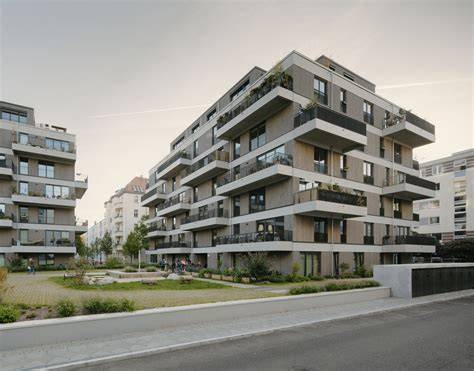
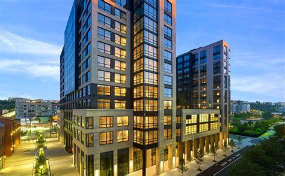

Plot Listing is a responsive Bootstrap 5 website template that included 4 different HTML pages. This template is provided by TemplateMo website. You can apply this layout for your static or dynamic CMS websites. Building an apartment complex involves careful planning, financial investment, and understanding the real estate market.
SmallAppartments

Here we'll focus on small apartment design ideas, including practical, simple minimalist designs, as well as stylish and fresh ones like Japanese-style or mid-century modern. In each guide, we give brief but valuable advice on how to declutter and spruce up a small space.
ModernAppartments
Modern Apartment are characterized by their focus on flexibility, sustainability, and innovative layouts. Key trends include: Open Concept Living: Removing walls between kitchens, dining, and living areas creates a spacious flow, making small apartments feel bigger. Earthy Neutral Palettes: Warm tones like beige, sand, and stone are embraced for cozy vibes, making them easier to style with any furniture. Multi-Functional Furniture: Furniture that doubles up, such as sofa-beds and extendable dining tables, is practical and stylish in one go.
LuxuryAppartments
The concept of luxury living in India has evolved dramatically over the past decade. Today’s luxury apartments offer far more than just spacious floor plans and premium locations—they represent a lifestyle choice that combines exclusivity, comfort, and prestige. With India’s population growing steadily, the demand for high-end residential properties continues to rise across major metropolitan areas.